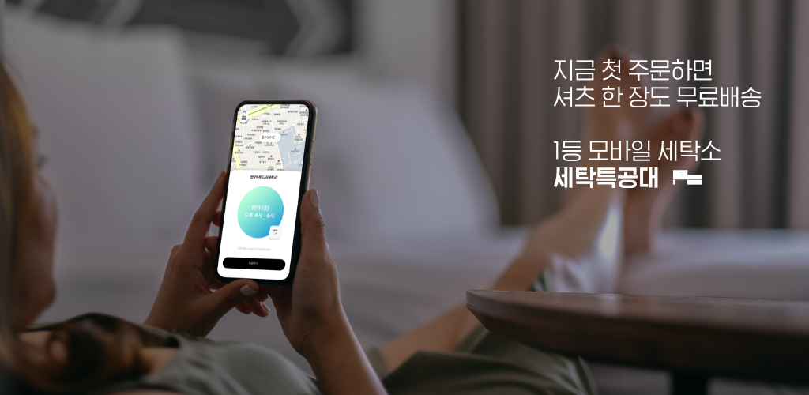

- 세탁특공대 소개
- 
- 세탁특공대는 대한민국 1등 세탁앱 서비스입니다. 누구나 경험하는 불편함을 해소하기 위해 누구도 시도한 적 없는 방법으로 새로운 기준을 만들었습니다.
대한민국의 세탁시장을 개척하고 후발주자를 양성하며 세탁 서비스의 기준을 높입니다.
hide
01 한번에 탁! 올인원 서비스
💡 드라이,빨래,이불,신발,카페트,수선까지 한 번에 세탁 끝!
- 직영 스마트팩토리에서 드라이클리닝, 웨트클리닝 전문 세탁
- 직영 워시팩토리에서 생활빨래, 침구류 세탁
- LF패션 출신 수선사 영입, 전문 수선실 운영
- 경력 30년 이상의 분야별(신발, 가죽, 카페트) 전문 파트너 제휴
02 문앞에 탁! 비대면 새벽배송
💡 기다리지 않아도 문 앞에 두면 세탁 끝!
- 문 앞에 두면 수거하고 48시간 뒤 배송
- 당일 밤 12시까지 주문 가능
- 세탁소에 직접 찾아가거나 기다릴 필요 없는 편리함
- 누구와도 마주칠 필요 없는 비대면 서비스
03 폰열고 탁! 다채널 간편주문
💡 앱 없어도 카톡주문, 전화주문(1566-5892), 갤럭시 문자주문 가능한 진짜 모바일 세탁!
- 수거 시간만 정하면 주문 끝
- 결제, 세탁현황 조회, 영수증 발급, 채팅상담까지 한 번에 해결
04 믿음이 탁! 스마트 팩토리
💡 주문부터 배달까지 하나의 시스템으로 안전하게
- 자체 개발한 국내 최고의 세탁물 트래킹 시스템
- 주문, 수거, 검수, 세탁, 검품, 포장, 배달까지 통합 시스템으로 안전
- 매일 교체하는 최고급 용제, 표준화된 26개의 세탁 프로그램
hide
숫자로 보는 세탁특공대
💵 120억+
누적 매출액
🚘 69만+
누적 출동건수
👔 100만+
누적 셔츠 세탁량
👍 99.4%
2019 품질만족도
hide
연혁
💁 2015
01. 프라이머, Sazze Partners, 개인 투자자로부터 시드 투자 유치
02. 세탁특공대 Android 런칭
03. 은행권청년창업재단 디캠프 디데이 수상 및 투자 유치
💁 2016
01. 세탁특공대 iOS 런칭
02. 직영 워싱팩토리 강남점 오픈 (국내 최초 모바일 빨래 대행 서비스 '생활빨래' 런칭)
03. 프라이머, Strong Ventures, 개인 투자자로부터 투자 유치
💁 2017
01. Google Play 대한민국 앱의 숨겨진 보석 선정
💁 2018
01. Addventure, Strong Ventures, 개인 투자자들로부터 280만 달러 (한화 약 30억) 투자 유치
02. 누적 다운로드 10만 달성
03. 직영 스마트팩토리 오픈 (일 평균 처리량 2,000피스 규모)
04. 직영 워싱팩토리 송파점 오픈
05. 컨시어지 서비스 런칭 (역삼동, 청담동 소재 총 3개 오피스텔 621세대)
💁 2019
01. 세특권 확장: 성남시 오픈
02. 세특권 확장: 서울시 전역, 하남시 오픈
03. 누적 매출 100억 달성
04. 세특권 확장: 고양시 오픈
05. '2019 대한민국광고대상 프로모션 부문 대상, 공공 부문 금상' 수상
06. 카카오톡 챗봇주문, 전화주문(1566-5892) 런칭
07. 삼성전자 챗봇주문(갤럭시 KT모델 탑재) 런칭
08. 중소벤처기업진흥공단 벤처기업 인증
💁 2020
01. 국내 B2C 최대 규모 직영 스마트팩토리 오픈
02. 세특권 확장: 광명시, 용인 기흥구 오픈
03. '2020 브랜드 소비자충성도 대상 모바일세탁 부문 1위' 수상
Last edited: 29 Apr, 2020
앱 바로가기
버튼을 클릭하시면 플레이스토어 또는 앱스토어로 연결됩니다.
앱 다운받기